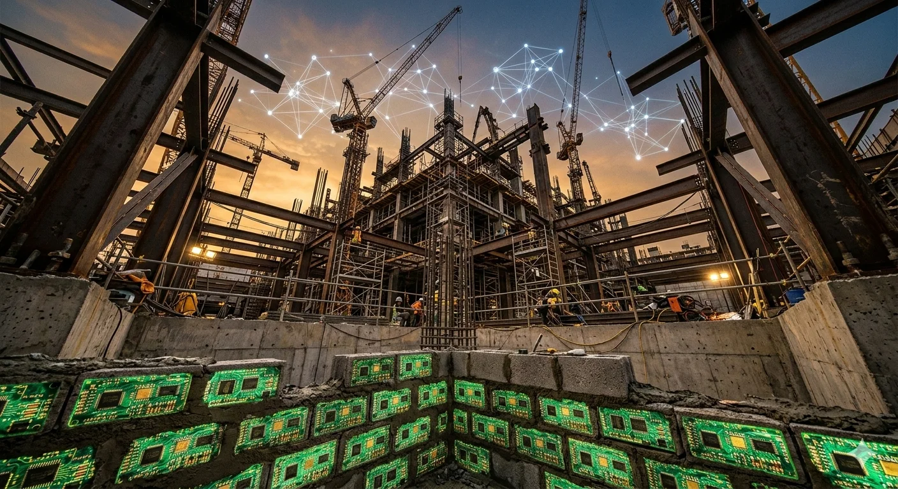
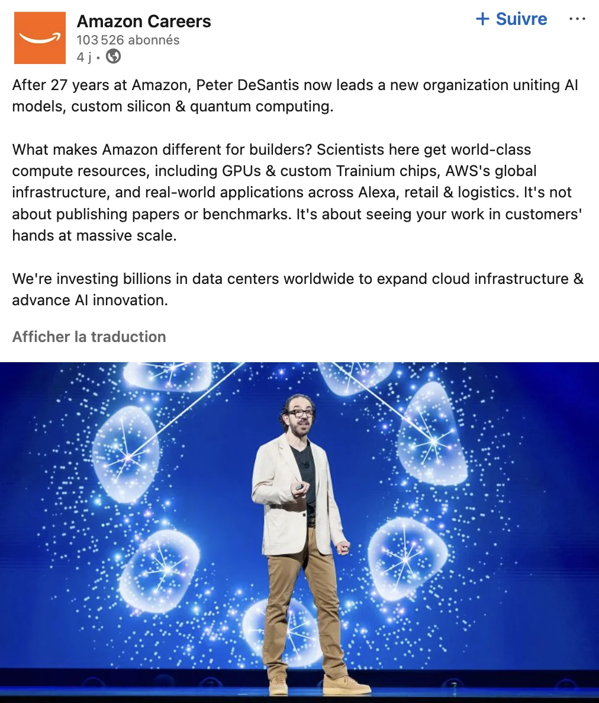

On Friday morning, Amazon announced a $50 billion investment in OpenAI — $15 billion upfront, another $35 billion conditional on milestones that reportedly include an IPO or the achievement of AGI — as part of a $110 billion funding round that valued the ChatGPT maker at $730 billion.[1] The deal includes a $100 billion expansion of OpenAI’s existing AWS contract, bringing the total commitment to $138 billion over eight years.[2] OpenAI will consume two gigawatts of Trainium capacity — Amazon’s custom silicon — and AWS becomes the cloud distribution provider for OpenAI Frontier, the company’s enterprise agent platform.[3]
The deal’s real significance is structural—and it requires understanding why OpenAI needed it in the first place.
Thirteen months ago, OpenAI stood in the White House and announced Stargate — a $500 billion joint venture with SoftBank and Oracle to build a network of massive AI data centers across the United States.[4] The plan was to secure 10 gigawatts of compute capacity within three years, reducing OpenAI’s dependency on third-party cloud providers.
It stalled almost immediately. The three-way partnership devolved into disputes over ownership, control, and financing.[5] OpenAI wanted to own its own data centers but couldn’t get financing — lenders weren’t willing to back billion-dollar construction from a company with heavy losses and an unproven model at infrastructure scale.[6] SoftBank and OpenAI clashed over a one-gigawatt Texas site, requiring marathon sessions in Tokyo before a compromise.[7] OpenAI missed its goal of locking down 10 GW of capacity by the end of 2025, and the venture didn’t meaningfully staff up.[8][9]
So OpenAI did what companies do when their infrastructure plans stall: it went to the infrastructure company.
For Amazon, the deal is validation of a decade-long bet: the company that failed to build a competitive AI model just became the infrastructure provider for the two companies that did. The market isn’t impressed. Amazon shares are down roughly 9% year to date — while the S&P 500 is approximately flat — heading into the largest capital expenditure commitment in the company’s history.[10] The company that just became the most essential infrastructure provider in the AI era is being valued as though “essential” and “exciting” are different categories. They are. That tension — between the strategy that wins market position and the market that punishes it — runs through everything that follows.
Understanding why requires tracing a pattern that has now played out three times in sequence — at the silicon, model, and framework layers. At each, AWS tried to compete up-stack — closer to the application, closer to the end user — failed, reverted to infrastructure, and discovered that the reversion produced the revenue the up-stack play never did. The pattern is a diagnostic tool: apply it to any company claiming to compete across the infrastructure-intelligence boundary, and it predicts where the value actually accrues.
The Silicon Layer: How Trainium Found Its Business Model
The chip story starts in 2015, when Amazon quietly acquired Annapurna Labs, an Israeli chip design firm, for approximately $350 million.[11] The rationale was vintage AWS: vertical integration to reduce dependency on a single supplier and pass cost savings to customers. Annapurna had already been designing custom networking chips for Amazon’s infrastructure. AI silicon was the next move.
The first product, Inferentia, launched in 2019 for inference workloads.[12] Trainium followed in 2022 for training.[13] Both chips were well-engineered. Neither did the market find what AWS expected.
The pitch was straightforward: according to AWS benchmarks, Trainium instances offered 30-40% better price-performance than comparable GPU instances.[14] For any company paying Nvidia prices at scale, that should have been compelling. It wasn’t — and the reason reveals something fundamental about how AI infrastructure markets actually work.
The problem wasn’t just CUDA lock-in — though that was real. The problem was that AWS made its own chips unreasonably difficult to adopt, then never prioritized fixing it.
Start with the Neuron SDK, the software layer developers needed to port their models to Trainium and Inferentia. The SDK was alien to anyone coming from the PyTorch/CUDA world — different abstractions, different debugging workflows, sparse documentation. SageMaker, which should have been the managed on-ramp, was itself a bottleneck: container updates for Trainium were delayed by months, forcing customers onto bare EC2 instances. The claimed price advantage evaporated long before the first training job was completed, buried under migration costs and engineering time. Around 2023, the Neuron team began building open libraries closer to PyTorch workflows — the right move, but too late. The chip was good. The developer experience around it was not. In infrastructure, developer experience is the product.
AWS solved this the way it solves most problems: by changing the terms of the deal. Instead of selling Trainium instances to thousands of self-service customers, it sold dedicated capacity to a small number of very large customers — companies whose scale made the migration investment rational, and whose engineering teams could work directly with Annapurna Labs on optimization.
Anthropic was the first and most important. Amazon has invested $8 billion in the company since 2023.[15] In October 2025, AWS brought Project Rainier online — one of the largest AI compute clusters ever built, with nearly 500,000 Trainium2 chips spread across multiple data centers, designed specifically for Anthropic’s Claude models.[16] By the end of 2025, Anthropic was expected to scale to more than one million Trainium2 chips for both training and inference.[17] Anthropic’s engineers wrote low-level kernels that interface directly with the Trainium silicon and contributed to AWS’s Neuron software stack.[18] The chip wasn’t sold to Anthropic. It was co-developed with Anthropic.
This relationship doesn’t fit the conventional vocabulary of business strategy. It isn’t outsourcing — Anthropic doesn’t buy chips off a product line. It isn’t vertical integration — AWS doesn’t own Anthropic’s model development. It’s a co-development partnership: the customer writes low-level kernels, feeds engineering requirements that shape the next chip generation, and commits to long-term capacity, while the supplier funds infrastructure to meet contracted demand. The economics are powerful — demand certainty for the supplier, cost optimization for the customer, co-evolution that makes switching mean abandoning years of shared engineering. The vulnerability is the mirror image: if the customer leaves, the supplier has custom infrastructure with no one to run on it. This is the model the OpenAI deal now replicates at an even larger scale.
Now OpenAI. The two-gigawatt Trainium commitment in the February deal means OpenAI will run on Trainium3 and Trainium4 — the next two generations of custom silicon.[19] Trainium3, which Amazon says will deliver 40% better price-performance than Trainium2, has nearly all of its 2026 supply committed.[20] Trainium4, not yet in production, promises 6x FP4 throughput and 3x FP8 performance over Trainium3.[21]
The financial results tell the story of the pivot. Amazon’s custom chip business — Trainium and the Graviton general-purpose processor — is now a $10 billion-plus annual run rate, growing at triple-digit year-over-year rates.[22] In Q4 2025, AWS deployed 1.4 million Trainium2 chips, which Amazon called the fastest chip ramp in its history.[23] Trainium2 reached full subscription status and, on its own, became a multi-billion-dollar business, growing 150% quarter over quarter.[24]
Self-service Trainium — selling chips to the general market — failed. Dedicated Trainium — selling capacity to frontier labs that co-develop the silicon — succeeded. The pivot wasn’t to something new. It was back to what cloud always was: infrastructure capacity at scale. The difference is the customer, not thousands of self-service developers, but a handful of frontier labs whose demand is large enough to justify co-developing the silicon itself.
That pivot also redefines the competitive set. When AWS sold self-service Trainium instances, it competed against Nvidia GPUs on every cloud. Dedicated Trainium competes against the neoclouds — CoreWeave, Lambda, Crusoe — companies built from scratch to do exactly one thing: sell AI compute capacity to the labs that need it most. The neoclouds’ advantage is architectural specialization: purpose-built GPU clusters optimized for AI workloads in ways that a general-purpose cloud’s multi-tenant infrastructure isn’t. AWS is betting that scale advantages in power procurement and permitting outweigh that specialization — and the early financial evidence is suggestive. CoreWeave’s Q4 2025 earnings told the story: revenue doubled year over year to $1.6 billion, but the company posted a $452 million net loss, an $89 million operating loss, and carried $21.4 billion in debt — more than four times its annual revenue.[91] Shares fell by more than 20% after the report. Purpose-built AI infrastructure generates impressive revenue growth; it does not yet generate the cash flow required to sustain itself without continuous debt issuance. The $200 billion capex makes more sense through this lens. AWS isn’t spending to add AI to a cloud business. It’s spending to out-build pure-play competitors whose entire existence is the market AWS just entered — and whose financial structure may not survive the spending war.
The Model Layer: From Titan to Landlord
If the silicon story is about finding the right customer, the model story is about finding the right role.
It begins in panic. When ChatGPT launched in November 2022, AWS account teams were flooded with customer calls asking a question Amazon couldn’t answer: what is your AI roadmap? AWS had world-class infrastructure, years of machine learning services including SageMaker, and no credible response to a chatbot that every CEO in America was suddenly asking about — pure terror. For months, the answer was essentially: we’re working on it. (I worked closely with AWS on the partnership described below during this period.[25])
AWS already had a partnership with Hugging Face, dating to March 2021, that made open-source models available on SageMaker.[26] After ChatGPT, that quiet integration received urgent new attention — an expanded deal in February 2023 made AWS Hugging Face’s preferred cloud provider. It was a minor mitigation, not an answer. When Amazon launched Bedrock in April 2023, a platform hosting foundation models from Anthropic, AI21 Labs, Stability AI, and Amazon itself, AWS account teams went all-in.[27] It was the only thing they could sell. Bedrock became generally available in September 2023 — ten months after ChatGPT launched. In the AI era, ten months is an eternity.
Bedrock came with Titan — Amazon’s own family of foundation models.[28] The reasoning was defensible: a cloud provider hosting third-party models needed its own offering for customers who wanted a first-party, privacy-compliant option. Every hyperscaler was building models. AWS would be no different.
Announced alongside Bedrock in April 2023 as a “limited preview,” Titan took seven months to reach general availability — and even then, only an embeddings model was available at Bedrock’s GA in September.[29][30] Text generation models didn’t ship until re:Invent in November. AWS refused to disclose model size, training data, or training methodology.[31] It didn’t really matter. Titan was not a product. It was a press release with an API endpoint.
When independent benchmarks arrived, they confirmed what practitioners already suspected. Philipp Schmid at Hugging Face ran Titan Embeddings through the standard MTEB benchmark suite and found it “worse than top open-source models, lacking critical features like batching, and up to 125x more expensive.”[32] The text generation models fared no better: “It’s worse than GPT-2” was a line heard more than once from enterprise customers — a comparison that stung precisely because GPT-2 was three years old and open-source.[33] Titan never appeared on any major independent leaderboard — not LMSYS Chatbot Arena, not Artificial Analysis, not the benchmarks that developers actually used to choose a platform. Updates trickled in through 2024: better fine-tuning, improved RAG performance, enhanced safety features. None of it closed the gap.
In December 2024, AWS replaced Titan with Nova — a full model family spanning Lite, Pro, and Omni variants, with Nova Premier following in April 2025.[34] Nova’s positioning was sharper: frontier-competitive benchmarks at 75% lower pricing, optimized to run natively on Trainium.[35] AWS reported “tens of thousands of customers” using Nova models.[36]
Independent benchmarks told a different story than the re:Invent keynote. On the Artificial Analysis Intelligence Index, the original Nova Pro scored at what the evaluation called “the lower end” of comparable models in its price tier; Nova 2.0 showed improvement but with a verbosity pattern that can inflate scores without improving practical utility.[37][38] No Amazon model — Titan or Nova — has ever appeared in the LMSYS Chatbot Arena top rankings, the crowdsourced human-preference benchmark that most closely approximates how developers actually experience a model.[39] Andrew Ng, who sits on Amazon’s own board, acknowledged the gap in December 2024: “Amazon’s foundation models have lagged behind those of competitors.”[40]
Here is where the practitioner’s view diverges from the press release. Nova appears in AWS keynotes, earnings slides, and Gartner positioning materials. It does not appear on independent leaderboards, in Y Combinator cohort data, or in the production stacks of AI-native companies. Nova is not a product for practitioners. It is a message to analysts. When AWS CEO Matt Garman stands on stage at re:Invent and demonstrates Nova, the audience isn’t the developer in the room — it’s the analyst on the earnings call who needs to check the “proprietary models” box.
In the 2024 Y Combinator cohort — the leading indicator for startup AI adoption, though not necessarily representative of enterprise patterns — only 4.3% of startups used Bedrock, while 88% used OpenAI.[41] That 4.3% deserves disaggregation. Bedrock hosts Claude, Llama, Mistral, and Nova — and the available evidence strongly suggests that the majority of Bedrock usage is Anthropic’s Claude, not Amazon’s models. When AWS reports Bedrock’s “multi-billion-dollar annualized run rate” and “100,000 customers,” it is reporting the success of a hosting platform, not Nova’s. The distinction is load-bearing: Bedrock’s revenue validates the landlord strategy, not the model strategy. AWS does not disclose Nova-specific usage versus third-party models on Bedrock — an omission that is itself a data point.[42] The pricing gap makes the revenue picture even more lopsided: Claude on Bedrock costs roughly 4 times as much per API call as Nova Pro, meaning Bedrock’s reported revenue is even more weighted toward third-party models than its usage numbers suggest.[43] Enterprise adoption may tell a somewhat different story — Nova’s lower pricing and first-party data handling appeal to compliance-sensitive workloads that don’t appear in startup cohort data. But the directional signal from the developer community building the next generation of AI products is clear: the models that define the frontier, and the developers building on it, are not choosing Nova.
The models aren’t the business. Bedrock is the business — and in a world where new frontier models appear quarterly, the platform that hosts all of them creates more stickiness than the platform that bets on one. Flexibility at the model layer is locked in at the platform layer. [44][45][46]
The OpenAI deal makes the pattern explicit. AWS will co-develop a “Stateful Runtime Environment” powered by OpenAI’s models, offered through Bedrock.[47] Microsoft retains exclusivity over stateless OpenAI API calls — the simple request-response interactions.[48] AWS gets the stateful environments — the complex, persistent, tool-using agent workloads that enterprises will actually pay for at scale.
The PR/FAQ Trap
The model failures weren’t bad luck. They were structural and produced by the same mechanism that makes Amazon great at everything else.
Every Amazon product begins with a PR/FAQ, a press release written before a line of code, working backwards from the customer to define the problem, the solution, and the metrics for success. It is one of the most effective product development mechanisms in corporate history. It is also a mechanism that would have killed ChatGPT in the cradle. A PR/FAQ for “general-purpose conversational AI” lacks a clear customer, use case, and success metric.
Amazon’s own history proves this. Amazon Lex, the company’s chatbot service launched in 2017, was built on Alexa’s speech recognition technology and stayed extremely limited: it could handle narrow, scripted conversational flows, but AWS never invested in making it genuinely intelligent because the customer demand wasn’t there.[49] Amazon Connect, which served a specific customer (call center operators) and focused on a specific metric (call resolution time), was launched the same year and became a substantial business.[50] The PR/FAQ process doesn’t suppress innovation — it channels innovation toward identifiable customers. A general-purpose chatbot without a clear customer couldn’t have passed the leadership bar. The scaling-laws insight that made LLMs inevitable required exactly the kind of speculative, researcher-driven bet the process is designed to filter out.
The counterargument writes itself: AWS was a product no customer requested, and Alexa was a bet on voice computing driven by Bezos’s personal conviction, not customer pull. Both prove Amazon can make bold, speculative bets. Neither survives scrutiny as a precedent for LLMs. AWS was infrastructure — the kind of operational engineering Amazon’s culture is built for. Alexa, for all the initial excitement, has failed to find a sustainable business model: by 2024, Amazon’s Devices unit was losing billions annually, Alexa had failed to generate meaningful commerce revenue, and Amazon’s attempts to reinvent it for generative AI have so far produced an assistant that works in demos but not reliably in practice.[51] Amazon Go — the cashierless store concept — closed its last locations in 2024 after years of expansion followed by retreat.[52]
The pattern is consistent: Amazon makes bold product bets, but the ones that succeed are infrastructure-adjacent (AWS, logistics, Kindle). Even the Kindle defense — Amazon iterates, look at Paperwhite — reinforces the pattern: Kindle iterated on a hardware distribution problem with a closed feedback loop where Amazon controlled the device, the store, the content deals, and the customer relationship. Nova iterates against the best-funded research labs in history, without the at-scale customer usage that would generate the feedback signal to iterateon. The bets that require sustained investment in an intelligence layer without a clear working-backwards-from-the-customer path — Alexa as a commerce platform, Go as a retail format, Lex as a conversational AI — stall or close. LLMs require exactly the capability that Amazon’s culture cannot foster.
Why the Researchers Left
The product culture explains why Amazon couldn’t build frontier models. The talent story explains why it couldn’t attract the people who can.
AWS celebrates “more than 20 years” of AI and machine learning innovation — the product recommendation engines, the logistics optimization, and the fraud detection.[53] It’s true. Two decades of applied ML, however, never attracted a single frontier research leader. Google recruited Geoffrey Hinton in 2013 and acquired Hassabis with DeepMind in 2014. Meta recruited Yann LeCun to build FAIR that same year — and though LeCun departed in late 2025, his lab had already shaped a decade of the company’s AI research culture.[54] Anthropic was built by researchers who left OpenAI. Amazon’s answer, in April 2024, was to put Andrew Ng on its board of directors.[55] A board seat is governance, not research leadership.
Amazon has never recruited — or managed to attract — a frontier AI scientist to lead its model development the way Hassabis leads DeepMind or LeCun built FAIR. The closest it came was Rohit Prasad, an Alexa and speech recognition veteran who led the AGI team from 2023 until his departure in December 2025 after twelve years at the company.[56] His replacement: Peter DeSantis, a 27-year Amazon veteran and senior vice president who runs custom silicon and quantum computing.[57] AWS would argue this is vertical integration — bringing models and chips under a single leader to optimize across the stack. When the AI research org reports to an infrastructure executive, though, the organizational signal is clear — and the departure pattern that preceded and followed the reorganization suggests researchers read it the same way.
In June 2025, Vasi Philomin, the AWS vice president who launched Bedrock and led foundation model development, left AWS to join Siemens as EVP of Data and AI.[58] The executive who built Amazon’s most successful AI product chose an industrial conglomerate over staying to build the next one.
Then there is Adept. In June 2024, Amazon spent over $300 million to acqui-hire five co-founders from the AI agent startup, installing CEO David Luan as head of a newly created AGI Lab in San Francisco.[59][60] Within eighteen months, four of the five had left — including Luan himself, who departed in February 2026.[61] Only Kelsey Szot remains. The pattern is one-directional: talent flows out, not in.
There is a structural reason it flows in only one direction. Frontier AI research runs on two currencies AWS has never traded in: publications and open source. Google published “Attention Is All You Need” — the Transformer paper that ignited the current era. Meta open-sourced PyTorch, then Llama, building research communities that double as talent pipelines. DeepMind publishes hundreds of papers annually. AWS, by contrast, has never maintained a meaningful publication culture, and its open-source AI contributions — MXNet, Gluon — failed to gain traction and were eventually abandoned.[62]
Researchers build careers on citations and community standing. AWS confirmed this as deliberate policy four days before this piece was published: a LinkedIn recruiting post for DeSantis’s new organization pitched prospective scientists that “it’s not about publishing papers or benchmarks” but about “seeing your work in customers’ hands at a massive scale.”[63]

To the frontier researcher choosing between DeepMind and AWS, the post answers the question for them. A company that treats research as a proprietary input to product development rather than a public contribution to the field will always lose frontier talent to one that doesn’t.
The executive who built Bedrock left. The scientist who led AGI left. The acqui-hired founders left. The infrastructure veteran stayed — and got promoted. The pattern is the conclusion. Frontier researchers go where culture publishes, opens source, and builds careers on citations. AWS’s own recruiting post says that’s not what it offers. The talent market is taking AWS at its word. Frontier research requires a different culture, one that Amazon’s system cannot foster.
The Framework Layer: AgentCore and the Plumbing Play
At the third layer, AWS applied the lesson Bedrock taught. The model-agnostic platform had become a multi-billion-dollar business not by competing with frontier models, but by hosting them all. When the industry shifted toward AI agents in 2025, AWS ran the same play.
Every other major player bet on the intelligence layer. OpenAI launched Operator. Anthropic shipped Claude agents with computer use. Google built Agentspace. Microsoft wove Copilot agents through its entire product surface. Each bet was on the agent itself — its capability, its reasoning, its user-facing experience.
AWS built the plumbing. Bedrock AgentCore, which went from preview in July 2025 to general availability in October, is not an agent framework and not an agent.[64] It is the operational infrastructure for deploying agents at enterprise scale — runtime isolation, identity management, persistent memory, observability, and policy controls — independent of which framework or model powers them.[65]
The companion open-source project, Strands — an agent SDK that provides a developer-facing abstraction layer — reached 2 million downloads within 5 months of launch.[66] That adoption velocity matters because it follows the pattern of AWS’s most successful open-source plays: provide the developer toolkit for free, charge for the operational infrastructure underneath.
AgentCore is model-agnostic and framework-agnostic — it runs agents built on Claude, OpenAI, Nova, or Llama, using LangGraph, CrewAI, LlamaIndex, or Strands interchangeably. Enterprise customers include PGA Tour, Workday, Toyota, Cox Automotive, Box.[67]
The playbook is identical to the one for EC2 and Lambda. When the industry builds new application architectures, AWS builds the operational infrastructure that those applications run on, then makes the infrastructure indifferent to the customer’s choice of framework. The indifference is the lock-in. Once your agent’s identity, memory, observability, and policy controls live in AgentCore, switching means rebuilding everything except the agent logic itself.
The Infrastructure Reversion Test
Three layers, one pattern. At the first two — silicon and models — AWS attempted to compete on intelligence, failed or underperformed, and reverted to infrastructure, discovering that the infrastructure play generated more revenue than the intelligence play ever could. At the third stage, the agents applied the lesson directly, building the operational platform without first building the agent. The criticism is that the first two failures were avoidable: the chip failed because of a poor developer experience AWS never prioritized fixing, and the models failed because Amazon’s product culture and talent policies are structurally incompatible with frontier research. But the pattern produced a clear result.
This is more than an AWS story — it’s a diagnostic framework. Call it the Infrastructure Reversion Test. The one-sentence version:When a company attempts to cross the infrastructure-intelligence boundary, it tends to revert to where the returns are.
The expanded version is a diagnostic that any investor, CTO, or board member can apply:Does the company’s institutional DNA — its hiring patterns, compensation structure, organizational incentives, and accumulated institutional knowledge — support the talent culture required for frontier intelligence work? Or does it support the operational discipline required for infrastructure at scale? If the company has attempted to cross the boundary before, did it succeed or revert?
Apply the test to Oracle's promise of gigawatt-scale AI data centers, to any startup claiming to build both the model and the infrastructure, and to any enterprise evaluating build-versus-buy. The boundary between infrastructure and intelligence isn’t a market accident. It’s a structural feature.
The reversion is mutual. OpenAI tried to go down-stack into infrastructure — Stargate stalled. AWS tried to go up the stack into intelligence — its models didn’t compete, and its research leaders departed. Neither company could cross the line. Infrastructure capability requires decades of institutional knowledge: permitting relationships, utility contracts, and construction management expertise that accumulates with every facility built. Intelligence capability requires a talent culture that infrastructure companies cannot sustain. The $138 billion deal is two companies acknowledging it.
Whether this represents strategic clarity or involuntary retreat is a fair question. The financial outcome is the same either way. OpenAI reportedly has Stargate “back on track”; AWS continues to invest in Nova. The reversion may be incomplete. The weight of capital, talent, and contractual commitment, however, is flowing in one direction: toward the boundary, not across it.
The OpenAI deal caps the pattern. AWS now provides the silicon (Trainium), the hosting platform (Bedrock), and the agent deployment infrastructure (AgentCore) for both of the world’s leading frontier AI companies. It invested $8 billion in Anthropic and committed up to $50 billion in OpenAI. It failed to build a competitive model of its own. By every financial metric, it is the most successful AI infrastructure company in the world.
The three-layer reversion tells the software story. The deeper moat is chip and mortar.
The Chip-and-Mortar Moat
AI is increasingly a civil engineering problem. The bottleneck is not model architecture or training algorithms — it’s power procurement, site permitting, electrical engineering, cooling systems, fiber interconnects, and the multi-year regulatory negotiations required to bring gigawatt-scale facilities online. Stargate proved this: OpenAI had the models, the talent, and the capital commitments. What it couldn’t do was build the data centers.
AWS has been solving these problems for twenty years. It operates 38 regions with more than 100 availability zones across 27 countries — each zone a cluster of data centers with independent power, cooling, and physical security, each requiring years of land acquisition, utility negotiation, environmental review, and construction management.[68] From 2011 to 2023, AWS invested approximately $120 billion in U.S. infrastructure alone.[69] It has signed three agreements to develop small modular nuclear reactors — with Energy Northwest and X-energy in Washington State for up to 960 megawatts, and with Dominion Energy in Virginia — alongside an expanded nuclear power purchase agreement with Talen Energy’s Susquehanna plant in Pennsylvania.[70] It is investing in the energy source itself, not just consuming it.
Training a frontier model takes weeks to months. Building and powering the facility where those model trains take four to six years — land acquisition, permitting (now two to three years in established markets), utility interconnection queues, transformer procurement with lead times stretching to four years.[71] That asymmetry is the moat — and it’s the kind of advantage that compounds with every facility built rather than eroding with every model generation.
Three Hyperscalers, Three Bets
The Infrastructure Reversion Test becomes clearest when applied comparatively. Microsoft, Google, and AWS each view the AI opportunity differently — and each is testing the boundary between infrastructure and intelligence from a different direction.
Microsoft went up-stack. Copilot is embedded in Office 365, Dynamics, GitHub, Windows, and Bing — the wager that AI’s value accrues to the company closest to the end user’s workflow.[72]
Microsoft is also showing early signs of reversion. Azure AI Foundry — a model-agnostic platform hosting 11,000 models and serving 80% of the Fortune 500 as customers — is structurally parallel to Bedrock.[73] Microsoft launched custom silicon (Maia AI chips) in 2023, in parallel with Annapurna Labs. In February 2025, TD Cowen reported that Microsoft had cancelled two gigawatts of data center leases due to oversupply.[74] Microsoft’s risk: the models it depends on are owned by OpenAI, a company that just raised $50 billion from Amazon.
Google went integrated. Gemini is the model, TPUs are the silicon, Google Cloud is the platform, and the model is woven into Search, Workspace, Android, and every consumer surface Google controls — a full-stack play on the premise that owning every layer creates reinforcing advantages.
Google has so far resisted reversion in a way AWS could not — partly because its research culture (DeepMind, Brain) coexists with infrastructure discipline in a way Amazon’s never did, and partly because TPUs have long been serving internal workloads at a scale that doesn’t require external customers to justify the silicon investment. Even Google, though, has begun opening its infrastructure to external AI companies: Anthropic’s October 2025 deal for up to one million TPUs suggests that the pull toward infrastructure-as-service is structural, not AWS-specific.[75]
AWS went down-stack. It doesn’t own the dominant model. It doesn’t own the killer agent. It doesn’t own the end-user application. It owns the silicon the model trains on, the platform the model is hosted on, and the infrastructure the agent runs on — wagering that AI’s value, like cloud’s value before it, accrues to the infrastructure layer, and that infrastructure advantages strengthen with scale in a way model advantages don’t. The $100 billion, eight-year AWS contract suggests where OpenAI thinks the volume is going.
What the Balance Sheet Shows
The financial story reinforces the reversion thesis — but the balance sheet reveals a company crossing from self-funded to debt-funded investment for the first time.
AWS reported $35.6 billion in Q4 2025 revenue, up 24% year over year — the fastest growth in thirteen quarters.[76] On an annualized basis, AWS is a $142 billion business.[77] Operating income reached $12.5 billion in the quarter, implying approximately 35% operating margins — though Q4 is typically AWS’s strongest quarter, and annualizing a single quarter’s margin overstates if the trend doesn’t hold.[78] A further caveat: Amazon, like every hyperscaler, has extended the useful life of its server infrastructure — from 4 years to 6 in recent years — a change that reduces annual depreciation expense by roughly one-third per asset and flatters reported operating margins without changing cash flow. At $200 billion in cumulative capex, the gap between reported operating margins (35%) and underlying cash economics is not trivial — an investor looking at those margins needs to know how much is operational and how much is accounting. The FCF figures below are unaffected by depreciation treatment, which is why they tell the more honest story.
The demand signal is harder to dismiss. Backlog stands at $244 billion, up 40% year over year and 22% quarter over quarter — strong enough that AWS CEO Matt Garman told investors the company was turning away business it couldn’t yet serve.[79]
Now apply the capex vertical’s stress test. Amazon’s 2026 capital expenditure plan is approximately $200 billion, up nearly 60% from 2025, with the majority directed at AWS infrastructure.[80] In FY2025, Amazon generated $139.5 billion in operating cash flow against $128.3 billion in capital expenditure — leaving free cash flow of just $11.2 billion, down 71% from $38.2 billion the prior year.[81] At a 2026 capex of $200 billion, even optimistic assumptions about operating cash flow growth (15-18%, reaching $160-165 billion) yield negative free cash flow of $35-40 billion. Amazon would need to fund the gap from its cash reserves ($89 billion at year-end) or through debt issuance — meaning 2026 is the year AI infrastructure investment shifts from self-funded to balance-sheet funded.
The capital allocation tells the same story from a different angle. Amazon has conducted zero share buybacks since Q2 2022, for more than three years.[82] No dividend. No buybacks. Every dollar of free cash flow, and then some, is directed at physical infrastructure. The company chose AI three years ago and hasn’t looked back.
In June 2025, CEO Jassy told employees what was coming: “We will need fewer people doing some of the jobs that are being done today.”[83] Four months later, Amazon laid off 14,000 corporate employees. In January 2026, it cut another 16,000 — bringing the total to 30,000, the company’s largest-ever workforce reduction.[84][85]
Read those two numbers together. Two hundred billion dollars are flowing into physical infrastructure. Thirty thousand corporate employees are flowing out. The company is systematically shifting resources from the human layers that serve customers directly toward the physical infrastructure layers that serve workloads at scale. Fewer people, more pipes, and a business model that increasingly depends on metered consumption rather than on relationships.
The revenue visibility from the infrastructure reversion suggests the bet is based on contracted demand. The $138 billion OpenAI contract, spread over eight years, represents roughly $17 billion in annual AWS revenue — about 11% of AWS’s expected 2026 revenue, according to William Blair estimates.[86] Add the Anthropic commitment, the 100,000-plus Bedrock customers, the custom chip business growing at triple digits, and the $244 billion backlog. The capex doesn’t look like a speculative bet. It looks like capacity build-out for demand that has already signed contracts.
There is a circularity concern that any honest analysis must address. Amazon invested $8 billion in Anthropic, which became one of its largest Trainium customers. It is investing $50 billion in OpenAI, which commits to $100 billion in AWS spending. The investments and the revenue are intertwined — the fear is that hyperscaler AI demand is partly self-referential. The structure of the OpenAI deal adds a layer: $35 billion of the $50 billion commitment is conditional on milestones that may include an IPO, meaning the headline figure overstates the committed capital by more than 3x. The counter is that both companies generate substantial independent revenue: Anthropic reached a $5 billion annualized run rate by mid-2025, and ChatGPT has more than 900 million weekly active users per Altman’s own announcement — a figure disclosed during a funding round and not independently audited.[87] The infrastructure demand has external customers behind it. The circularity, though, is real, and the investments are not zero-risk capital allocation.
What Would Have to Break
The infrastructure reversion works until it doesn’t. Four risks worth watching.
First, the co-development model concentrates risk. Anthropic and OpenAI together may represent 15-20% of AWS revenue within two years — the $17 billion annualized OpenAI estimate alone is roughly 11%, and Anthropic’s Trainium consumption is scaling rapidly. If either relationship deteriorates — Anthropic has already signed a major deal with Google Cloud for one million TPUs[75] — AWS’s custom silicon business faces a demand vacuum that self-service customers can’t fill. The chip business works precisely because it depends on a small number of very large customers. That’s also the vulnerability.
Second, the industry could consolidate in a way that makes model-agnostic hosting less valuable. If the market settles on one or two dominant model families — as it settled on x86 for decades — hosting thirty models becomes hosting two models with window dressing. Bedrock’s value proposition depends on the AI model market remaining fragmented. So far, fragmentation is accelerating. So far is not forever.
Third, Nova could get good enough to matter. If a future Nova model reaches genuine frontier performance, Bedrock’s host-everything positioning weakens. Today, the evidence cuts strongly against this scenario — four of five acqui-hired Adept co-founders have departed, and the AGI lab reports to an infrastructure executive. The custom model collaboration with OpenAI could accelerate the timeline, but it produces models for Bedrock, not ones that replace it.[88]
Fourth, Nvidia moves downstream. The neoclouds are the visible competitive set, but Nvidia itself — through DGX Cloud, OEM partnerships, and increasing platform ambitions — may be the more significant long-term threat to Trainium. If Jensen Huang prices against custom silicon specifically, the co-development model’s cost advantage narrows. CUDA lock-in matters here: Nvidia controls the software ecosystem that makes switching to Trainium expensive, and that leverage only increases as Nvidia expands its own infrastructure offerings.
None of these risks is imminent. All are baked into the bet's architecture. The Infrastructure Reversion Test suggests a more fundamental risk.
The Utility Trap
Call it the fifth risk, except it isn’t a risk to the business. It’s a risk to the equity.
The strategy that wins market position is the same strategy that destroys the equity premium. A utility wins by being essential, reliable, and impossible to replace. A growth stock wins by being exciting, fast-moving, and easy to imagine at 10x. AWS is becoming the most essential infrastructure company in the AI era — and the market is punishing it for exactly that.
Look at the numbers. Over the past twelve months, AMZN has declined roughly 1% — against the S&P 500’s approximately 16% gain.[89] For a company that just secured $138 billion in contracted AI revenue, built the silicon that Frontier Labs runs on, and grew AWS at its fastest pace in three years, the market is pricing Amazon as though its infrastructure strategy is a cost center rather than a competitive moat. The 2026 selloff — AMZN down roughly 9% year to date while the S&P is approximately flat — is the market pricing in $200 billion in capex and asking whether a utility, however essential, deserves a growth multiple. The OpenAI deal, announced on a Saturday, will test whether the market reprices when it opens Monday — or whether it treats the largest infrastructure deal in tech history as a non-event.[90]
Historical precedent cuts both ways. IBM spent a decade trying to make Watson an AI product before effectively writing it off; the stock’s recovery coincided with its pivot to hybrid cloud infrastructure under Arvind Krishna. At its Watson-era trough, IBM traded below 10x earnings — a utility multiple for a company that once commanded a premium. Cisco spent twenty years pushing into applications and collaboration — Webex generated real revenue, but never enough to change the company’s identity. Its stock took nearly two decades to recover its dot-com peak, spending years in the low teens on forward earnings. Both companies eventually escaped the Utility Trap — but only after years of multiple compression, and only when the infrastructure layer they controlled became the chokepoint of a new technology cycle.
The difference: IBM and Cisco reverted from positions of weakness. AWS is reverting from a position of strength — $142 billion in revenue, 24% growth, $244 billion in backlog — which is why the repricing, if it comes, may arrive faster. Amazon currently trades at roughly 30x forward earnings; the distance between that and a utility multiple — IBM’s trough was below 10x, Cisco’s was in the low teens — is the measure of what the Utility Trap costs if the market decides infrastructure is infrastructure. Whether the market recognizes it before or after the contracted revenue materializes is the timing bet.
The trap is structural: the deeper you go into infrastructure, the more essential you become and the less exciting. AWS chose essential. It spent a decade trying to build AI intelligence and failed at every layer. Then it built the infrastructure beneath it — and the two most valuable AI companies in the world now run on its silicon, host on its platform, and deploy on its infrastructure. Amazon didn’t win the AI race. It built the track — and it charges by the lap. The question is whether essential eventually gets repriced as exciting when the tolls start compounding.
Notes
[1] OpenAI, “OpenAI announces strategic partnerships and $110 billion funding round,” February 28, 2026. Amazon investment of $50 billion: $15 billion initial Series C preferred investment, $35 billion conditional equity commitment via Amazon subsidiary. Sherwood News reported that the $35 billion conditional tranche may depend on OpenAI achieving an IPO or AGI milestone. Round also includes $30 billion each from Nvidia and SoftBank. Pre-money valuation: $730 billion.
[2] Amazon, “OpenAI and Amazon announce strategic partnership,” aboutamazon.com, February 27, 2026. Expands existing $38 billion multi-year agreement (announced November 2025) by $100 billion, totaling $138 billion. Duration: the eight-year term was reported by GeekWire and William Blair analysis; the Amazon announcement does not separately specify the duration of the original $38B agreement versus the $100B expansion. The $17B/year estimate in footnote 86 assumes even distribution across eight years, which may not reflect actual contract structure.
[3] Ibid. AWS exclusive third-party cloud distribution for OpenAI Frontier. 2 GW Trainium commitment covers Trainium3 and Trainium4 capacity.
[4] OpenAI and the Trump administration announced the Stargate Project on January 21, 2025, as a $500 billion joint venture between OpenAI, SoftBank, and Oracle to build AI data centers across the United States. Source: White House announcement, multiple press reports.
[5] The Information, “Inside OpenAI’s Scramble to Get Computing Power After Stargate Stalled,” February 2026. Reported that the three-way partnership devolved into disputes over ownership, control, and financing, with the venture failing to meaningfully staff up.
[6] Multiple reports indicate OpenAI attempted to build data centers independently but could not secure financing. Lenders were unwilling to back billion-dollar construction projects given OpenAI’s unprofitability and unproven business model at infrastructure scale. Source: The Information, Tom’s Hardware, The Decoder, February 2026.
[7] The Information, February 2026. SoftBank and OpenAI clashed over a 1 GW Texas data center site. Control negotiations required marathon sessions at SoftBank’s Tokyo headquarters before a compromise was reached: SoftBank’s energy arm would own and develop the site; OpenAI would control design and hold a long-term lease.
[8] The Information, February 2026. “OpenAI missed its goal of contracting 10 GW of capacity through Oracle and SoftBank by the end of 2025.”
[9] The Information, February 2026. The Stargate venture “has not staffed up and is not developing OpenAI’s AI data centers” at the initially expected pace. As of early 2026, development was reportedly back on track across several sites but significantly behind the original timeline.
[10] AMZN year-to-date performance as of February 27, 2026: down approximately 9% (FinanceCharts.com: -8.97%), versus S&P 500 up approximately 0.5% (SlickCharts/S&P Dow Jones Indices: +0.49% price return).
[11] Annapurna Labs acquisition: approximately $350 million, announced January 2015. Annapurna was an Israeli semiconductor company designing ARM-based processors.
[12] AWS Inferentia launched at re:Invent 2019 for inference workloads. Inferentia2 followed in 2023.
[13] AWS Trainium announced 2020, first-generation launched 2022, Trainium2 announced at re:Invent 2023 and reached general availability at re:Invent 2024.
[14] AWS claims Trainium2 delivers 30-40% better price-performance than comparable GPU-based EC2 instances. Vendor-published benchmark, not independently verified by a third party. Multiple sources cite this figure, including AWS re:Invent presentations and earnings call commentary.
[15] Amazon’s total investment in Anthropic: $8 billion, deployed in tranches — $1.25 billion (September 2023), $2.75 billion (March 2024), $4 billion (late 2024). Sources: Amazon SEC filings, multiple press reports.
[16] AWS, “Project Rainier: one of the world’s largest AI compute clusters is now operational,” aboutamazon.com, October 29, 2025. Nearly 500,000 Trainium2 chips across multiple U.S. data centers. $11 billion Indiana campus as primary site.
[17] Ibid. “Claude is expected to be on more than 1 million Trainium2 chips — for workloads including training and inference — by the end of the year.”
[18] Anthropic, partnership details. Anthropic engineers “writing low-level kernels that allow us to directly interface with the Trainium silicon, and contributing to the AWS Neuron software stack.” Reported by Data Centre Magazine, November 2025.
[19] Amazon, “OpenAI and Amazon announce strategic partnership,” February 27, 2026. 2 GW Trainium commitment supports Stateful Runtime, Frontier, and other advanced workloads. TipRanks analysis specifies Trainium3 and Trainium4 capacity.
[20] Amazon Q4 2025 earnings call, February 6, 2026. “Trainium3 should preview at the end of this year and beginning of 2026... Trainium3 will be 40% better than Trainium2.” Vendor projection for an unreleased chip; not independently verified. Multiple analyst reports note nearly full 2026 supply commitment.
[21] AWS re:Invent 2025 Trainium4 specifications as announced. 6x FP4 throughput, 3x FP8 performance, 4x memory bandwidth vs. Trainium3. NVLink Fusion support. Production timeline: 2027. These are roadmap figures for a chip not yet in production; not independently verified.
[22] Amazon Q4 2025 earnings release. Custom chip business (Trainium plus Graviton general-purpose processor combined) exceeds $10 billion annual run rate with triple-digit year-over-year growth. Note: this figure combines AI silicon (Trainium/Inferentia) and general-purpose silicon (Graviton) revenue. Trainium-only revenue not separately disclosed.
[23] Amazon Q4 2025 earnings call. 1.4 million Trainium2 chips deployed, described as “fastest ramping chip launch” in company history.
[24] Amazon Q3 2025 earnings call, October 30, 2025. “Trainium2 [is] fully subscribed and a multi-billion-dollar business” growing 150% quarter-over-quarter. Analyst reports from Futurum Research and Constellation Research confirm.
[25] The author worked at Hugging Face from 2021 to 2024, including as Chief Evangelist, and worked closely with AWS on the partnership referenced in this section, including the original March 2021 integration and the February 2023 expansion. Source: Hugging Face blog, “The Partnership: Amazon SageMaker and Hugging Face,” March 2021; “Hugging Face and AWS partner to make AI more accessible,” February 21, 2023 (author credited on both posts).
[26] Hugging Face-AWS partnership launched March 2021 with Hugging Face Deep Learning Containers on SageMaker. Expanded February 21, 2023, designating AWS as Hugging Face’s preferred cloud provider with integrations for SageMaker, Trainium, and Inferentia. Sources: Hugging Face blog, “The Partnership: Amazon SageMaker and Hugging Face,” March 2021; Hugging Face blog, February 21, 2023; SiliconANGLE, February 21, 2023.
[27] Amazon announced Bedrock in preview April 13, 2023 and reached general availability September 28, 2023 — ten months after ChatGPT’s November 30, 2022 launch. Source: AWS blog, April 13, 2023; TechCrunch, September 28, 2023.
[28] AWS launched Amazon Bedrock and Amazon Titan models in “limited preview” at AWS Summit, April 13, 2023. Titan was announced alongside Bedrock as Amazon’s own foundation model family. Sources: AWS blog, April 13, 2023; CNBC, April 13, 2023; InfoQ, April 14, 2023.
[29] Bloomberg, May 2023. Reporter Matt Day described the Titan/Bedrock announcement as “an unusually vague presser and just one testimonial,” noting that six weeks after announcement, most AWS cloud customers still lacked access. Source: Bloomberg Technology, May 2023.
[30] When Bedrock reached general availability September 28, 2023, only Titan Embeddings was available — no text generation model. Titan Text Express and Titan Text Lite did not reach GA until re:Invent, November 29, 2023 — more than seven months after the April announcement. Sources: TechCrunch, September 28, 2023; AWS re:Invent 2023 announcements.
[31] CNBC reported that during the Bedrock/Titan launch period, AWS VP Swami Sivasubramanian and Titan lead Ankur Saha declined to disclose model size, training data composition, or safety processes. Alan D. Thompson, independent AI researcher, noted in July 2023: “Details about Amazon Titan are scarce. Here’s what we know about Amazon Titan (not very much)” — confirming only an approximately 200 billion parameter dense model trained on 4 trillion tokens using 13,760 A100 GPUs over 48 days. Sources: CNBC, April 2023; Alan D. Thompson, “Amazon Titan: Everything We Know,” LifeArchitect.ai, July 2023.
[32] Philipp Schmid, then at Hugging Face, evaluated Amazon Titan Embeddings against the standard MTEB (Massive Text Embedding Benchmark) suite, November 2023. Finding: “Amazon Titan Embeddings is worse than top open-source models, lacks critical features like batching, and is up to 125x more expensive.” Source: Philipp Schmid, “Amazon Titan Embeddings: A Comprehensive Overview and MTEB Evaluation,” November 2023. B-tier (independent practitioner benchmark, not peer-reviewed, but using standard methodology against A-tier benchmark suite).
[33] “Worse than GPT-2” was feedback the author heard directly from multiple AWS enterprise customers during 2023. GPT-2 was released by OpenAI in February 2019 and open-sourced in November 2019 — making the comparison particularly pointed. Developer community discussion (Blind, tech forums, November 2023) reflected similar sentiment following Schmid’s analysis. Primary experience corroborated by public developer discourse, but not independently sourced journalism.
[34] Nova family launched at re:Invent December 2024 (Lite, Pro, Omni variants). Nova Premier announced April 2025 with 1 million token context window. Described by AWS as most advanced “understanding model.” Sources: AWS re:Invent 2024 announcements; AWS blog, April 2025.
[35] AWS claims Nova models deliver frontier-competitive benchmarks at 75% lower pricing. Vendor-published benchmarks, not independently verified. Note: AWS’s own benchmark comparisons select the evaluation suites; independent evaluations (see footnotes 37-40) use different methodologies and reach different conclusions.
[36] AWS reported “tens of thousands of customers” using Nova models. Source: AWS blog and product announcements, 2025. Note: “tens of thousands” is Amazon’s claim; methodology and definition of “customer” (paying vs. free-tier API access) undisclosed.
[37] Artificial Analysis Intelligence Index (independent third-party composite benchmark spanning reasoning, knowledge, mathematics, and coding). Nova Pro v1 scored 13 against a median of 19 for non-reasoning models in a similar price tier — described by the evaluation as “lower end among comparable models.” For context: frontier models score 60-80+ on the same index. Source: Artificial Analysis, artificialanalysis.ai/models/nova-pro, accessed February 2026. A-tier (independent measurement using standardized methodology).
[38] Nova 2.0 Pro Preview (non-reasoning) scored 23 on the Artificial Analysis Intelligence Index against a median of 19 for comparable models — above average. However, the evaluation notes it generated 44 million output tokens during testing versus an average of 3.9 million for comparable models — approximately 11x more verbose. This verbosity can inflate benchmark scores by providing more attempts at correct answers within evaluation frameworks. Source: Artificial Analysis, artificialanalysis.ai/models/nova-2-0-pro, accessed February 2026. Nova 2.0 Pro Preview (medium reasoning) scored 36 against a median of 27. Source: Artificial Analysis, artificialanalysis.ai/models/nova-2-0-pro-reasoning-medium, accessed February 2026.
[39] LMSYS Chatbot Arena is a crowdsourced human-preference benchmark where users compare model outputs in blind pairwise evaluations. As of February 2026, the top 5 models are Claude Opus 4.6, Gemini 3.1 Pro, Grok 4.20, Gemini 3 Pro, and GPT-5.2. No Amazon model (Titan or Nova) appears in the visible top rankings. Source: LMSYS Chatbot Arena leaderboard, lmarena.ai, accessed February 2026.
[40] Andrew Ng, speaking at a DeepLearning.AI event, December 2024: “Amazon’s foundation models have lagged behind those of competitors.” Ng joined Amazon’s board of directors in April 2024 (see footnote 41). The Decoder, December 2025, independently assessed: “Amazon’s Nova 2 undercuts OpenAI and Google on price but still trails top-tier models.” Sources: DeepLearning.AI, December 2024; The Decoder, December 2025.
[41] Y Combinator 2024 cohort data. 88% use OpenAI, 4.3% use Bedrock. Observation widely cited by cloud analyst Corey Quinn and others. Note: YC cohort heavily skews toward startups, which may not represent enterprise adoption patterns. Used here as a directional signal for developer preference in AI-native companies, not as a measure of total market adoption. Critically: “Bedrock” usage includes all models hosted on the platform — Claude, Llama, Mistral, and Nova. The vast majority of Bedrock API calls are to Anthropic’s Claude, not Amazon’s Nova models. The 4.3% figure is Bedrock platform adoption, not Nova model adoption. Nova-specific usage would be a fraction of that figure.
[42] AWS does not separately disclose Nova model usage versus third-party model usage on Bedrock. Bedrock metrics — “multi-billion-dollar annualized run rate,” “100,000+ customers,” “60% quarter-over-quarter growth in customer spend” — aggregate all models on the platform. Anthropic’s revenue growth trajectory — from approximately $5 billion ARR by mid-2025 (per multiple press reports) to a Sacra estimate of approximately $14 billion ARR by early 2026 — suggests rapid scaling, though the higher figure is a single-source B-tier estimate and the nearly 3x jump in under a year has not been independently confirmed. Even at the lower, more conservative figure, a significant portion of Bedrock revenue flows through third-party models, not Nova.
[43] Pricing as of February 2026: Claude Sonnet 4.5 on Bedrock: $3.00 per million input tokens / $15.00 per million output tokens. Nova Pro: $0.80 per million input tokens / $3.20 per million output tokens. Newer Claude models (Sonnet 4.6, Opus 4.6) are priced at or above these levels. The approximately 4x pricing differential means that for equal usage volume, Anthropic generates roughly four times the revenue per API call on Bedrock compared to Amazon’s own Nova models. Sources: AWS Bedrock pricing page, accessed February 2026.
[44] As of February 2026, Bedrock hosts models from Anthropic (Claude), OpenAI (via new partnership), Meta (Llama), Amazon (Nova), Mistral, Cohere, AI21 Labs, Stability AI, and others.
[45] Amazon Q4 2025 earnings. Bedrock at “multi-billion dollar annualized run rate,” 100,000+ customers, 60% quarter-over-quarter growth in customer spend.
[46] Amazon Q3 2025 earnings call. “The majority of Bedrock token usage [is] already running on Trainium.” Confirmed by Futurum Research analysis.
[47] Amazon, “OpenAI and Amazon announce strategic partnership,” February 27, 2026. Stateful Runtime Environment description: “allows developers to keep context, remember prior work, work across software tools and data sources, and access compute.”
[48] Microsoft statement, February 27, 2026: “Azure remains the exclusive cloud provider of stateless OpenAI APIs.” Stateless = simple request-response. Stateful = persistent context, multi-session agents. GeekWire analysis, February 27, 2026.
[49] Amazon Lex launched in April 2017, built on the same automatic speech recognition and natural language understanding technology as Alexa. The service enabled developers to build conversational interfaces for applications but remained limited to scripted, intent-based dialogue flows — closer to a voice-activated menu system than a conversational AI. AWS never invested in making Lex genuinely intelligent; by 2022, Lex V2 added incremental improvements (streaming conversations, multilingual support) but no fundamental capability upgrade. The service continued to exist but never became a significant revenue contributor or developer-community focal point. Amazon Connect, launched the same month, served contact center operators with clear metrics (call handling time, resolution rate, cost per contact) and grew into a substantial business. Source: AWS product announcements; author’s primary experience with both services.
[50] Amazon Connect launched April 2017 and grew to serve thousands of enterprise customers including Capital One, Intuit, and the U.S. Internal Revenue Service. By 2023, Connect had become one of the fastest-growing AWS services, with generative AI features (Contact Lens, agent assist) added starting in late 2023. The contrast with Lex illustrates the PR/FAQ mechanism: Connect had a clear customer (contact center operators), a clear metric (cost per contact, resolution time), and a clear working-backwards narrative. Lex had a technology looking for a use case. Source: AWS customer announcements; Amazon earnings commentary.
[51] Alexa financial performance and GenAI reinvention: Amazon’s Devices and Services unit, which includes Alexa, lost approximately $10 billion between 2017 and 2021, per internal documents reported by The Wall Street Journal in November 2022. Amazon laid off thousands of Alexa employees in November 2022 and again in 2023. The generative AI reinvention — “Remarkable Alexa,” announced at re:Invent 2023 as a subscription service — experienced repeated delays and was described by press and reviewers as inconsistent. As of early 2026, the subscription Alexa product had not achieved broad market traction. Sources: Wall Street Journal, November 2022; Business Insider, multiple reports 2023-2025; The Verge, “Alexa’s AI upgrade,” 2024.
[52] Amazon Go: launched as a pilot in Seattle in January 2018, expanded to approximately 44 locations across the U.S. and U.K. by 2022. Amazon began closing Go stores in 2023 and shuttered the remaining locations by early 2024. The “Just Walk Out” technology was scaled back after reports that it relied partly on human reviewers in India to verify transactions. Amazon pivoted the technology to third-party licensing (grocery stores, stadiums) rather than operating its own retail locations. Sources: The Verge, April 2024; Reuters, multiple reports 2023-2024.
[53] AWS, “Celebrate over 20 years of AI/ML at Innovation Day,” aws.amazon.com, September 30, 2022: “Over the past 20 years, Amazon has delivered many world firsts for artificial intelligence (AI) and machine learning (ML).” AWS CEO Matt Garman in Wired interview, December 2025: “We’ve been investing in AI, in AWS and Amazon, for the last decade-plus, two decades maybe.” Amazon’s internal ML use includes product recommendation engines (deployed since the early 2000s), demand forecasting, logistics optimization, and fraud detection.
[54] Google recruited Geoffrey Hinton in 2013 as a Distinguished Researcher; he shared the 2018 Turing Award. Google acquired DeepMind and Demis Hassabis in January 2014 for approximately $500 million. Google Brain, co-founded by Andrew Ng and Jeff Dean in 2011, attracted researchers including Ian Goodfellow (inventor of GANs). Meta (then Facebook) recruited Yann LeCun in December 2013 to found and lead FAIR (Facebook AI Research). LeCun departed Meta in November 2025 to launch Advanced Machine Intelligence Labs (AMI Labs), targeting a $3.5 billion pre-launch valuation. Sources: CNBC, November 19, 2025; Fortune, December 19, 2025; The Decoder, January 3, 2026.
[55] Andrew Ng joined Amazon’s board of directors effective April 9, 2024. Ng co-founded Google Brain, served as chief scientist at Baidu, and is Managing General Partner of AI Fund. Amazon stated his appointment would “help to inform the Board’s perspective on the opportunities and challenges that AI presents.” Source: aboutamazon.com, April 11, 2024; Fortune, April 11, 2024.
[56] Rohit Prasad, SVP and head scientist for AGI at Amazon, departed at the end of 2025. Prasad joined Amazon in 2013, led Alexa’s speech science team, and was appointed to lead the AGI team in 2023 after ChatGPT’s launch. He oversaw the creation of Amazon Nova and the AGI organization. His departure was announced in a memo by CEO Andy Jassy on December 17, 2025. Sources: Fortune, December 17, 2025; GeekWire, December 17, 2025; CNBC, December 17, 2025.
[57] Peter DeSantis, SVP at Amazon since 1998, was appointed to lead a new organization combining AGI, custom silicon, and quantum computing in December 2025. DeSantis previously led AWS Utility Computing Products, overseeing most of AWS’s engineering teams. Sources: GeekWire, December 17, 2025; CIO Dive, December 17, 2025.
[58] Vasi Philomin, AWS VP of Generative AI, departed Amazon in June 2025. Philomin launched Amazon Bedrock and led foundation model development at AWS. He joined Siemens as EVP of Data and AI (per Engineering.com) / head of data and artificial intelligence (per Reuters), a newly created position reporting to CTO Peter Koerte. Source: Reuters, June 30, 2025; Engineering.com, July 9, 2025.
[59] Amazon acqui-hire of Adept, June 2024. Five co-founders joined: David Luan (CEO), Augustus Odena, Maxwell Nye, Erich Elsen, and Kelsey Szot. Amazon also licensed Adept’s AI models, datasets, and technologies. Amazon paid over $300 million in licensing fees (WSJ reported $330 million); total cost including compensation packages for hired employees would be higher. Adept had raised approximately $415 million and was valued at approximately $1 billion. Sources: TechCrunch, June 28, 2024; Semafor, August 2, 2024; Wall Street Journal, February 24, 2026.
[60] David Luan, interview with TechCrunch, August 23, 2025. Luan explained he left Adept for Amazon because he “wasn’t interested in turning Adept into an enterprise company that only sells small models” and wanted to solve “the four crucial remaining research problems left to AGI,” each of which “is going to require two-digit billion-dollar clusters.”
[61] As of February 2026, four of five Adept co-founders who joined Amazon have departed. Augustus Odena left for Meta’s TBD Labs (June-November 2025), then departed Meta. Maxwell Nye returned to independent research. Erich Elsen departed (destination not publicly confirmed). David Luan announced his departure on LinkedIn, February 24, 2026: “I will leave at the end of the week to cook up something new.” Only Kelsey Szot remains at Amazon. Sources: GeekWire, February 24, 2026; Augustus Odena personal website; Maxwell Nye personal website.
[62] AWS adopted Apache MXNet as its official deep learning framework in 2016 and co-developed the Gluon API with Microsoft in 2017. Neither gained meaningful community adoption against Google’s TensorFlow or Meta’s PyTorch. By 2023, AWS had effectively conceded: it shifted its documentation and tutorials to PyTorch, stopped actively developing MXNet, and the Apache Software Foundation moved MXNet to the Attic (end-of-life) in 2023. AWS’s most significant open-source AI contribution, the Neuron SDK for Trainium/Inferentia, is infrastructure tooling — consistent with the infrastructure reversion pattern. Sources: Apache Software Foundation, MXNet retirement notice, 2023; AWS documentation migration to PyTorch; author’s primary experience.
[63] Amazon Careers LinkedIn post, February 24, 2026. Post promoting Peter DeSantis’s new organization: “After 27 years at Amazon, Peter DeSantis now leads a new organization uniting AI models, custom silicon & quantum computing.” Recruiting pitch to prospective scientists: “It’s not about publishing papers or benchmarks. It’s about seeing your work in customers’ hands at massive scale.” Vendor-published recruiting communication; cited here not as a claim about AWS capability but as direct evidence of AWS’s stated organizational values regarding publication culture. Source: linkedin.com/posts/amazon-careers, accessed February 28, 2026.
[64] AWS Bedrock AgentCore: preview July 2025, general availability October 2025.
[65] AgentCore capabilities: runtime isolation, identity management, persistent memory, tool gateway, observability, and policy controls. Source: AWS product documentation and launch announcements.
[66] AWS Strands (open-source agent SDK): 2 million downloads within five months of launch. Source: AWS announcements and developer metrics. Note: npm/pip download counts can be inflated by CI/CD pipelines and automated tooling. For context, LangChain — the most widely adopted agent framework — had approximately 30 million monthly PyPI downloads as of early 2026. Two million total downloads is an early adoption signal, not market dominance.
[67] AgentCore customers include PGA Tour, Workday, Epsilon, Toyota, Cox Automotive, Box, and others. Source: AWS customer announcements and Amazon Q2 2025 earnings release.
[68] AWS Global Infrastructure page, accessed February 2026. 38 regions, 105+ availability zones, 27 countries. AWS defines each availability zone as one or more discrete data centers with independent power, networking, and connectivity. Source: aws.amazon.com/about-aws/global-infrastructure/ and Data Center Knowledge, “AI-First Hyperscalers: 2026’s Sprint Meets the Power Bottleneck,” February 2026.
[69] Dgtl Infra, “Amazon Web Services (AWS) Data Center Locations,” citing AWS disclosures. “From 2011 to 2023, AWS invested approximately $120 billion in its cloud computing infrastructure in the United States.”
[70] AWS nuclear energy investments: (a) Three SMR agreements announced October 2024 — with Energy Northwest and X-energy for up to four Xe-100 reactors (320 MW initial, expandable to 960 MW) near Richland, Washington; with Dominion Energy to explore SMRs in Virginia; and a direct investment in X-energy. (b) Expanded power purchase agreement with Talen Energy’s Susquehanna nuclear plant in Pennsylvania for 1,920 MW through 2042, announced June 2025. (c) Cascade Advanced Energy Facility (X-energy Xe-100 design) expected to begin construction by end of decade, operational in 2030s. Sources: Amazon sustainability announcements, Talen Energy press release June 11, 2025, Data Center Dynamics November 2024.
[71] Data center construction timelines: a realistic timeline for a new hyperscale build in a constrained market — from land acquisition to operations — is 4–6 years, with permitting (now 2–3 years in established markets like Northern Virginia, Dublin, and Singapore), utility interconnection queues, and transformer procurement (lead times up to 4 years) as the primary drivers. Modular construction can compress the build phase to 16–20 months, but permitting and power procurement timelines are largely fixed. Sources: The Network Installers, “30+ Data Center Construction Statistics, Market Size & Trends (2026),” February 2026; Datacenters.com, “Data Center Construction in 2025: Permitting, Power, and Pitfalls,” October 2025; Global Data Center Hub, “From Permit to Power-On,” November 2025.
[72] Microsoft 365 Copilot: 150 million monthly active users across commercial and consumer as of FY2025 annual report. Pricing: $30/user/month for enterprise; reduced to $21/user/month for SMBs (up to 300 users) effective December 2025. Sources: Microsoft FY2025 Annual Report; Microsoft Partner Center December 2025 announcements.
[73] Azure AI Foundry: model-agnostic platform with access to 11,000+ models from OpenAI, Meta, Mistral, Cohere, DeepSeek, xAI, and others. 80% of Fortune 500 using Foundry. Microsoft also launched MAI-1 (first in-house foundation model) in 2025. Sources: Microsoft FY2025 Annual Report; Futurum Research, August 2025.
[74] TD Cowen analysts, citing supply chain checks, reported in February 2025 that Microsoft cancelled data center leases totaling approximately two gigawatts of power capacity due to oversupply relative to near-term demand. Source: TD Cowen research note, February 2025; reported by Quartz, July 28, 2025.
[75] Anthropic expanded its contract with Google Cloud in October 2025 for access to up to one million of Google’s Tensor Processing Units (TPUs). Sources: multiple press reports, October 2025.
[76] Amazon Q4 2025 earnings release. AWS revenue: $35.6 billion, up approximately 24% year over year. Described as fastest growth pace in approximately thirteen quarters.
[77] Author’s calculation. $35.6 billion × 4 = $142.4 billion annualized. This is a simplification; AWS revenue varies by quarter, and annualizing Q4 (typically the strongest quarter) may overstate the annual figure.
[78] Amazon Q4 2025 earnings release. AWS operating income: $12.47 billion. Author’s calculation: $12.47B / $35.6B = 35.0% operating margin. Note: Q4 is typically AWS’s strongest quarter; trailing twelve-month margins would provide a more conservative figure.
[79] Amazon Q4 2025 earnings release. AWS backlog: $244 billion, up 40% year over year and 22% quarter over quarter.
[80] Amazon 2026 capital expenditure guidance: approximately $200 billion, up nearly 60% from 2025. Majority directed at AWS and AI infrastructure. Source: Amazon Q4 2025 earnings guidance.
[81] Amazon FY2025 cash flow statement. Operating cash flow: $139.5 billion. Net purchases of property and equipment: $128.3 billion. Free cash flow: $11.2 billion, down from $38.2 billion in FY2024. Source: Amazon FY2025 10-K; MacroHint analysis, February 2026.
[82] Amazon authorized a $10 billion share repurchase program in March 2022 (SEC filing, March 9, 2022). As of mid-2024, only $3.9 billion had been executed. Per Bloomberg (reported by Seoul Economic Daily, February 2026), Amazon conducted no share buybacks from Q2 2022 through the end of 2025 — more than three years. Amazon pays no dividend.
[83] Andy Jassy, Amazon employee blog post, June 2025: “As we roll out more Generative AI and agents, it should change the way our work is done. We will need fewer people doing some of the jobs that are being done today, and more people doing other types of jobs.” Source: CNN, January 28, 2026, quoting Jassy’s June 2025 statement.
[84] Amazon laid off approximately 14,000 corporate employees in October 2025 and 16,000 in January 2026, totaling approximately 30,000 — the largest workforce reduction in company history, surpassing the 27,000 cuts in 2022-2023. Amazon’s corporate workforce numbered approximately 350,000. Sources: Beth Galetti memo, January 28, 2026; GeekWire, CNBC, CNN, January 28, 2026.
[85] Internal restructuring codename “Project Dawn” was disclosed when an internal email from Colleen Aubrey, SVP of Applied AI Solutions at AWS, was accidentally shared with employees before the official announcement. Source: Salesforce Ben, reporting on the leaked email, January 28, 2026.
[86] William Blair analyst estimate: $100 billion OpenAI contract over eight years implies approximately $17 billion per year if spread evenly, representing roughly 11% of AWS’s expected 2026 revenue. Analyst estimate, not fact. Source: GeekWire, February 27, 2026.
[87] Anthropic annualized revenue run rate exceeded $5 billion by August 2025, per multiple press reports. ChatGPT weekly active users exceed 900 million with more than 50 million consumer subscribers, per Sam Altman, February 27, 2026 announcement.
[88] Amazon/OpenAI partnership includes collaboration on “customized models available to Amazon developers to power Amazon’s customer-facing applications.” Source: Amazon partnership announcement, February 27, 2026.
[89] AMZN trailing twelve-month price return as of February 27, 2026: approximately -1% (Investing.com: -1.07%). S&P 500 one-year price return as of February 27, 2026: approximately 15.5% (Investing.com: 15.52%). AMZN YTD 2026: approximately -9.0% (FinanceCharts.com: -8.97%). S&P 500 YTD 2026: approximately +0.5% price return (SlickCharts/S&P Dow Jones Indices: +0.49%). The one-year underperformance of roughly 16-17 percentage points coincides with the period of heaviest AI infrastructure investment.
[90] OpenAI announced the $110 billion funding round (including Amazon’s $50 billion investment) on Saturday, February 28, 2026. Markets were closed. AMZN closed at $210.00 on Friday, February 27 (up 1.00% from prior close of $207.92). The market’s reaction will be visible when trading resumes Monday, March 2. Sources: OpenAI press release, February 28, 2026; CNBC, Reuters, TechCrunch reporting February 28, 2026; AMZN closing price per Investing.com.
[91] CoreWeave Q4 2025 earnings (reported February 26, 2026): revenue $1.57 billion (up 110% YoY), Q4 net loss $452 million (vs. $51 million prior year), Q4 operating loss $89 million (vs. operating income of $113 million prior year), Q4 interest expense $388 million (up from $149 million). Total debt: $21.37 billion as of December 31, 2025. Full-year 2025 revenue: $5.1 billion; full-year net loss: $1.17 billion. Shares fell approximately 8% in extended trading. 2026 capex guidance: $30-35 billion; 2026 revenue guidance: $12-13 billion. Sources: CoreWeave Q4 2025 earnings release; CNBC, February 26, 2026; Investing.com earnings analysis.